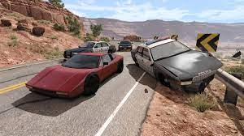

<!DOCTYPE html>
<html lang="en">
<head>
    <meta charset="UTF-8">
    <meta name="viewport" content="width=device-width, initial-scale=1.0">
    <link rel="stylesheet" type="text/css" href="style.css" />
    <title>Document</title>
</head>
<body>
    
</body>
</html>


<p>Developed by BeamNG GmbH, BeamNG.drive diverges from traditional racing-oriented simulations and instead places emphasis on the realistic simulation of vehicle dynamics and collisions. It's not your typical racing game, but rather a virtual automotive playground that allows players to experiment with countless scenarios and experience the joys and devastations of vehicular interactions.

The core of BeamNG.drive's appeal lies in its remarkably detailed and advanced physics engine. Every vehicle in the game behaves with a sense of realism that is unmatched in the genre. Whether you're trying to navigate a tight corner, perform a power slide, or engage in a high-speed collision, the physics engine accurately captures the nuances of vehicle movement, weight distribution, and deformation. This opens up a world of possibilities for players who enjoy testing the limits of vehicle behaviour.

One of the standout features is the game's "Soft-body Physics," which simulates the deformation of vehicles in a dynamic and responsive manner. Crashes and collisions look and feel shockingly realistic, making each accident an engrossing spectacle in its own right. The damage model and the way cars crumple and break apart are particularly impressive, giving players a chance to witness the chaos of automotive destruction up close.

While BeamNG.drive doesn't offer traditional racing circuits or structured campaigns, it makes up for this by providing an extensive set of user-created scenarios and a robust vehicle customization system. The game is essentially a sandbox, and players can construct their own challenges, scenarios, and environments, fostering creativity and experimentation. The modding community is vibrant, and there's a steady stream of user-generated content that ranges from elaborate obstacle courses to intricate recreations of real-world locations.

Graphically, BeamNG.drive presents a mix of strengths and weaknesses. The vehicles themselves are detailed and well-designed, showcasing an impressive level of realism. Environments, on the other hand, can sometimes lack the same level of detail and polish. The lighting and weather effects contribute to the overall visual appeal, but they may not be at the cutting edge of modern gaming visuals.

The audio design is solid, with engine sounds that match the behaviour of the vehicles accurately. The crunching of metal and the shattering of glass during collisions add an immersive layer to the overall experience.

BeamNG.drive caters to a specific niche of gamers who are intrigued by the physics and mechanics of vehicles, as well as those who enjoy creative experimentation and the art of vehicular destruction. While it lacks traditional racing elements, it compensates with unparalleled attention to detail in its physics simulation. The game's sandbox nature and robust modding community ensure that its longevity remains intact, as new content continues to be created by the community. If you're seeking a different kind of driving experience that focuses on the intricacies of vehicle dynamics and the thrill of chaotic collisions, BeamNG.drive is well worth a spin. </p>

<h2>Personal Task</h2>
<p>The evolution of website styles and clientele has been a profound and dynamic journey spanning several decades. In the past, websites were characterised by rudimentary designs that relied on basic HTML and lacked interactive elements. This early era primarily attracted tech-savvy users and early adopters who navigated through clunky layouts and sluggish loading times.

Presently, websites have undergone a remarkable transformation, embracing visually captivating and user-friendly interfaces. The advent of technologies such as CSS, JavaScript, and responsive design has resulted in adaptive platforms that ensure consistent experiences across various devices. Consequently, the clientele has expanded significantly, encompassing users of diverse backgrounds and ages, as the internet has become an indispensable part of everyday life.

Looking towards the future, the trajectory of website development holds even more profound changes. The integration of Artificial Intelligence (AI) and Machine Learning (ML) will usher in an era of personalised and hyper-targeted user experiences, dynamically tailoring content to individual preferences in real-time. Moreover, the advent of immersive technologies like augmented reality (AR) and virtual reality (VR) is set to redefine website aesthetics, blurring the boundaries between the physical and digital realms. Consequently, the clientele will further diversify, as technology becomes increasingly accessible and seamlessly integrated into various facets of daily routines.

In conclusion, the historical evolution of website styles and clientele has witnessed significant strides in design, accessibility, and user experience. From rudimentary layouts catering to a limited audience, we have embraced sophisticated designs that cater to a global and diverse clientele. As we peer into the future, the prospects of AI-driven personalisation and immersive technologies are poised to reshape the digital landscape, revolutionising the way we interact with websites.


</p>

<h3>Bibliography</h3>
<a href="https://www.vandelaydesign.com/evolution-of-web-design/">Evolution of Web Design: A Journey through History</a>
<a href="https://99designs.com/blog/web-digital/web-design-history/">Web Design History: A Comprehensive Look Back at Web Design</a>
<a href="https://www.shillingtoneducation.com/blog/the-evolution-of-web-design/">The Evolution of Web Design" by Shillington Education</a>
<a href="https://www.kentico.com/blog/the-evolution-of-the-web-past-present-and-future">The Evolution of the Web: Past, Present, and Future</a>
<a href="https://xd.adobe.com/ideas/principles/web-design/the-future-of-web-design/">Artificial Intelligence and the Future of Web Design</a>
<a href="https://www.tooploox.com/blog/artificial-intelligence-and-the-future-of-web-design">The Future of Web Design: Trends and Predictions for the Coming Years</a>
<a href="https://uxdesign.cc/the-impact-of-ai-and-machine-learning-on-web-design-53010ab53760 ">The Impact of AI and Machine Learning on Web Design</a>
